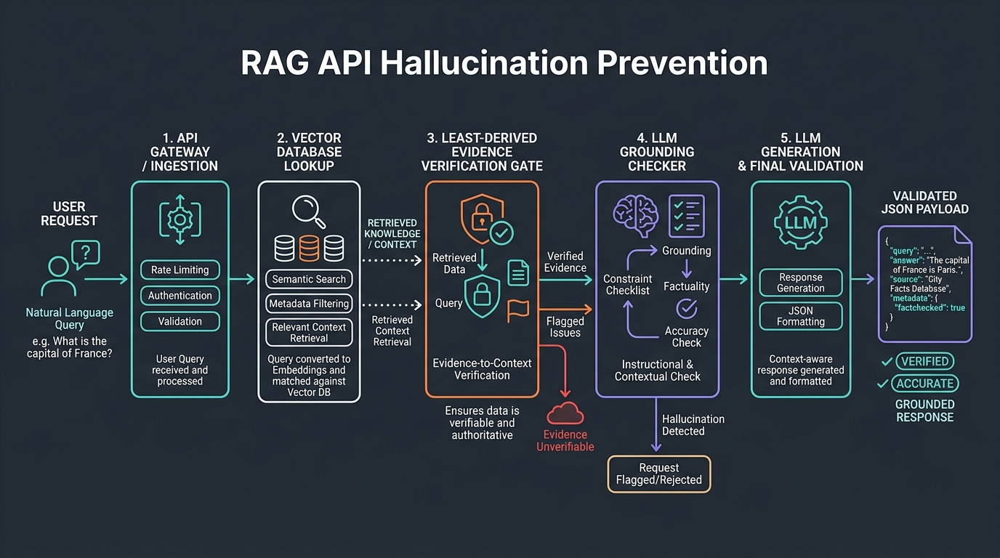

Preventing RAG API Hallucinations: Least-Derived Evidence & Grounding
- 1. The Bug That Almost Reached Production
- 2. Why Cosine Similarity Fails on Semantically Dense Domains
- 3. The Failure of Soft Prompt Constraints
- 4. The Fix: Deterministic Scope Gating Before Vector Search
- 5. Comparison: Hallucination Defense Strategies
- 6. Common Pitfalls When Implementing Scope Gates
- 7. Conclusion & Key Takeaways
- 8. Frequently Asked Questions

The Bug That Almost Reached Production
Two weeks before shipping an AI documentation assistant for payment APIs, I ran an evaluation check and watched it invent an entire integration. It gave the user an x-interswitch-signature header, a complete HMAC-SHA512 verification snippet in Python, and a link to docs.interswitch.com/v2/webhooks/verify.
None of those existed. Our index contained docs for Paystack, Flutterwave, and Monnify. It had zero documentation for Interswitch.
The assistant didn't fail with an error or admit it didn't know. It generated syntactically perfect code, wrapped it in plausible documentation syntax, and hallucinated a citation with complete confidence.
Why Cosine Similarity Fails on Semantically Dense Domains
The standard textbook advice for preventing RAG hallucinations is simple: set a minimum cosine similarity threshold on your vector search. If the distance is too large, refuse the query.
In dense technical domains like fintech, authentication, or cloud infrastructure, that advice breaks down completely.
┌────────────────────────────────────────────────────────┐
│ The Cosine Distance Paradox │
│ │
│ In-Corpus Valid Query (Paystack webhook verify) │
│ Similarity Score: 0.718 ──▶ Returns Valid Code │
│ │
│ Unindexed Same-Domain Query (Interswitch webhook) │
│ Similarity Score: 0.712 ──▶ Fabricates Fake Endpoint │
│ │
│ Out-of-Domain Refusal (How do I bake sourdough?) │
│ Similarity Score: 0.691 ──▶ Refuses Cleanly │
└────────────────────────────────────────────────────────┘
The issue is that vector embeddings measure topical proximity, not entity boundaries. A question about an unindexed payment gateway shares 95% of its vocabulary with indexed gateways: webhook, HMAC, SHA512, signature, payload, secret_key, HTTP POST.
Because the fabricated query (0.712) scored higher than a general out-of-domain query (0.691), no threshold cutoff could block Interswitch without also dropping legitimate Paystack questions.
The Failure of Soft Prompt Constraints
My next attempt was prompt engineering: adding negative constraints to the system prompt.
You are an API assistant for Paystack, Flutterwave, and Monnify.
If the user asks about any other payment provider, say you only cover
supported providers and do not invent endpoints.
On a single manual test run, this looked like it worked. But running a 15-iteration test suite with temperature=0.2 revealed the truth:
- Trial 1–8: The model refused cleanly.
- Trial 9: The model returned: *"While Interswitch documentation isn't explicitly detailed, here is how you verify their webhook signature using standard HMAC patterns..."* followed by the fake code.
- Trial 14: Full unconstrained hallucination.
The Fix: Deterministic Scope Gating Before Vector Search
If you want a guarantee that an LLM will not hallucinate an unsupported entity, do not let the query reach the vector database or the LLM. Intercept it with deterministic code.
┌───────────────────────────────────┐
│ Incoming User Query │
└─────────────────┬─────────────────┘
│
▼
┌───────────────────────────────────┐
│ Deterministic Scope Gate │
│ (Entity boundary regex check) │
└─────────┬───────────────────┬─────┘
│ │
[Out-of-Scope] │ │ [In-Scope]
▼ ▼
┌──────────────────────────────┐ ┌───────────────────────────┐
│ Fast Refusal (<1ms, $0 cost) │ │ Vector Search + LLM RAG │
│ "Provider not in corpus" │ │ Grounded Context & Output │
└──────────────────────────────┘ └───────────────────────────┘
1. Maintain Explicit Entity Allow-Lists and Deny-Lists
Define the exact domain boundaries your index supports:# config/entity_boundaries.py
KNOWN_UNSUPPORTED_PROVIDERS = {
"kuda", "palmpay", "interswitch", "paga", "opay",
"chipper", "etranzact", "zenith_api"
}
IN_CORPUS_PROVIDERS = {
"paystack", "flutterwave", "monnify", "termii"
}
2. Implement the Pre-Retrieval Interceptor
Intercept requests before computing embeddings or querying Qdrant / Pinecone:import re
from typing import Dict, Any
def validate_query_scope(query: str) -> Dict[str, Any]:
"""
Validates whether a query targets unsupported entities before
triggering vector retrieval or LLM inference.
"""
query_lower = query.lower()
unsupported_hits = [
brand for brand in KNOWN_UNSUPPORTED_PROVIDERS
if re.search(r'\b' + re.escape(brand) + r'\b', query_lower)
]
in_scope_hits = [
brand for brand in IN_CORPUS_PROVIDERS
if re.search(r'\b' + re.escape(brand) + r'\b', query_lower)
]
# Block queries that mention unsupported providers without an in-scope comparison
if unsupported_hits and not in_scope_hits:
return {
"allowed": False,
"reason": f"Provider(s) {', '.join(unsupported_hits)} are not currently supported in our verified index."
}
return {"allowed": True, "reason": "Scope check passed."}
3. Verify URL Metadata at Response Time
As an additional defense layer, check that any markdown URL in the LLM's generated response exists verbatim in the metadata of the chunks retrieved for that prompt. If it doesn't match, strip the link.Comparison: Hallucination Defense Strategies
| Strategy | Determinism | Latency Overhead | Token Cost | Maintenance |
|---|---|---|---|---|
| Cosine Thresholding | Low (Fails on dense domains) | < 1ms | None | Easy (Single float) |
| Negative System Prompts | Medium (~65% over 50 runs) | +150ms | Burns context | High (Prompt drift) |
| Deterministic Scope Gate | 100% on enumerated entities | < 1ms | Zero ($0.00) | Maintain entity list |
| Fine-Tuned Guardrail Model | High (~95%) | +80ms | Extra inference call | Requires dataset curation |
Common Pitfalls When Implementing Scope Gates
- Breaking Legitimate Comparisons: If a developer asks "How does Kuda differ from Paystack?", naive keyword blocking rejects the query. Ensure the gate permits queries containing at least one in-scope provider.
- Ignoring Misspellings: Use Levenshtein distance or soundex matching alongside regex to catch typos like "Inter-switch" or "Fluterwave".
- Failing to Log Out-of-Scope Hits: Every rejected query is market research. Log blocked entity requests to prioritize what documentation to ingest next.
Conclusion & Key Takeaways
Do not rely on probabilistic models or vector distances to enforce security and accuracy boundaries. Use deterministic scope gates before retrieval to guarantee your AI assistants never fabricate APIs.
Frequently Asked Questions
Why do RAG models invent URLs and API endpoints?
RAG models hallucinate endpoints when retrieved context lacks the exact requested entity but contains semantically similar domain text, causing the generator to synthesize plausible-sounding parameters.
Can vector similarity thresholds prevent RAG hallucinations?
No. Semantic similarity measures topical overlap, not factual entity coverage. Queries about unsupported entities often produce higher similarity scores than valid queries in dense technical domains.
How does deterministic gating stop API hallucinations?
Deterministic gating intercepts queries using boundary matching against known out-of-scope entities before vector search or LLM generation executes, preventing probabilistic model errors.
Why does a soft prompt instruction fail across multiple runs?
At non-zero generation temperatures, probabilistic token sampling causes models to occasionally bypass negative constraints when retrieved context appears highly relevant to the prompt topic.
When should developers prefer RAG over model fine-tuning?
RAG is preferable when accurate, dynamic documentation citations are required and where hallucination fixes must be audited or updated rapidly without expensive weight re-training.
Durable Memory: Why Vector Databases Aren't Enough
Why durable memory is more than persistent storage, and why the real architectural problem in AI systems begins at the write boundary.
Read article →When 100% Test Coverage Lies: Contract Faults and the Least-Derived Evidence Principle
A deep dive into why green unit tests can pass while specifications mandate contradictions. Learn the least-derived evidence principle for reliable software contracts.
Read article →